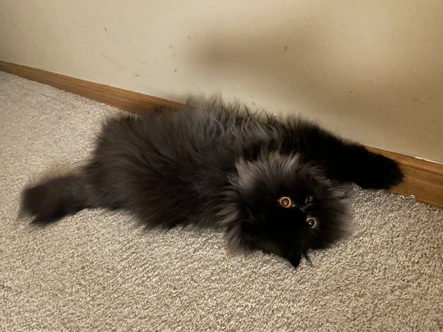

I am an Assistant Professor at University of Texas at Austin Dell Medical School, working at the intersection of Human-Computer Interaction, Social Computing, and Health & Wellbeing. I study how the public and health professionals perceive, evaluate, and act on health information and AI assistance, and what it takes to do so safely and meaningfully.
Health information no longer only comes from clinical encounters. It comes from posts, peers, and search results, and now AI is woven into health work itself: helping a patient interpret a symptom, a clinician draft notes, or a trainee learn to communicate with caregivers. This assistance is produced on demand, but whether it helps or harms is frequently decided out of view. I use both computational and qualitative methods to study the responsible adoption of AI in health, assessing what these systems produce in the settings they enter; how people perceive and trust AI, as what they take a system to be shapes how they use it; and health signals and support in everyday life, where social and everyday data reveals what formal healthcare systems miss and how support happens beyond the encounter.
My research has been published at premier venues for human-centered computing, such as CHI, CSCW, and ACL. My papers received a Best Paper Award at CSCW 2025 (top 1%) and a Best Paper Honorable Mention at CHI 2023 (top 4%). I hold a Ph.D. in Human-Centered Computing from Georgia Institute of Technology, where I was fortunate to be advised by Prof. Munmun De Choudhury. During that time, I was recognized with the Foley Scholar Award, the highest award for PhD student contributions to computing research at Georgia Tech.
Research
Loading…
News
- Loading…
Publications
For a more up-to-date and complete list, please check my Google Scholar page.
Loading…
Travels & Talks
- Loading…
If you made it this far, say hi to my cat Kabi
